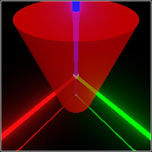
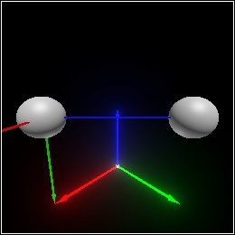
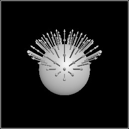
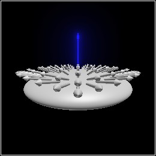
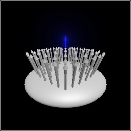
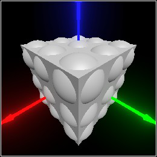
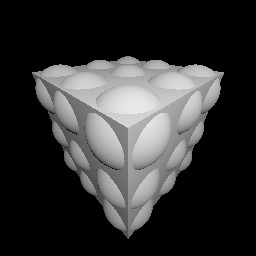

6 Transformation
TODO: exposition about linear transformations and affine transformations
6.1 Basic Transformation Data Types
procedure
(linear-x-axis t) → Dir
t : Linear
procedure
(linear-y-axis t) → Dir
t : Linear
procedure
(linear-z-axis t) → Dir
t : Linear
(match-define (linear dx dy dz) t)
(define dx (linear-x-axis t)) (define dy (linear-y-axis t)) (define dz (linear-z-axis t))
value
> identity-linear (linear +x +y +z)
procedure
(linear-compose t ...) → Linear
t : Linear
procedure
(linear-inverse t) → Linear
t : Linear
If t isn’t invertible, linear-inverse raises an error. See linear-singular?.
procedure
(linear-singular? t) → Boolean
t : Linear
procedure
(affine-x-axis t) → Dir
t : Affine
procedure
(affine-y-axis t) → Dir
t : Affine
procedure
(affine-z-axis t) → Dir
t : Affine
procedure
(affine-origin t) → Pos
t : Affine
(match-define (affine dx dy dz p) t)
(define dx (affine-x-axis t)) (define dy (affine-y-axis t)) (define dz (affine-z-axis t)) (define p (affine-origin t))
value
> identity-affine (linear +x +y +z)
> (affine-origin identity-affine) origin
procedure
(affine-compose t ...) → Affine
t : Affine
procedure
(affine-inverse t) → Affine
t : Affine
If t isn’t invertible, affine-inverse raises an error. See affine-singular?.
procedure
(affine-singular? t) → Boolean
t : Affine
procedure
(linear-consistent? t) → Boolean
t : Linear
procedure
(affine-consistent? t) → Boolean
t : Affine
6.2 Transformation Combiners and Constructors
procedure
pict : Pict3D dv : Dir
procedure
pict : Pict3D dx : Real
procedure
pict : Pict3D dy : Real
procedure
pict : Pict3D dz : Real
procedure
pict : Pict3D dv : (U Real Dir)
procedure
pict : Pict3D dx : Real
procedure
pict : Pict3D dy : Real
procedure
pict : Pict3D dz : Real
The center of scaling—
procedure
pict : Pict3D axis : Dir angle : Real
procedure
pict : Pict3D angle : Real
procedure
pict : Pict3D angle : Real
procedure
pict : Pict3D angle : Real
The center of rotation is the origin. This is often not what you want. To rotate pict around a different center, see rotate/center.
procedure
(scale/center pict dv [v]) → Pict3D
pict : Pict3D dv : (U Real Dir) v : Pos = (center pict)
procedure
(scale-x/center pict dx [v]) → Pict3D
pict : Pict3D dx : Real v : Pos = (center pict)
procedure
(scale-y/center pict dy [v]) → Pict3D
pict : Pict3D dy : Real v : Pos = (center pict)
procedure
(scale-z/center pict dz [v]) → Pict3D
pict : Pict3D dz : Real v : Pos = (center pict)
By default, v is the center of pict’s bounding box. If pict doesn’t have a bounding box (for example, it’s the empty-pict3d), the origin is the default center.
(local-transform pict (scale dv) (move (pos- v origin)))
procedure
(rotate/center pict axis angle [v]) → Pict3D
pict : Pict3D axis : Dir angle : Real v : Pos = (center pict)
procedure
(rotate-x/center pict angle [v]) → Pict3D
pict : Pict3D angle : Real v : Pos = (center pict)
procedure
(rotate-y/center pict angle [v]) → Pict3D
pict : Pict3D angle : Real v : Pos = (center pict)
procedure
(rotate-z/center pict angle [v]) → Pict3D
pict : Pict3D angle : Real v : Pos = (center pict)
By default, v is the center of pict’s bounding box. If pict doesn’t have a bounding box (for example, it’s the empty-pict3d), the origin is the default center.
(local-transform pict (rotate axis angle) (move (pos- v origin)))
procedure
(point-at v dv [ #:angle angle #:up up #:normalize? normalize?]) → Affine v : Pos dv : Dir angle : Real = 0 up : Dir = +z normalize? : Any = #t
(point-at v1 v2 [ #:angle angle #:up up #:normalize? normalize?]) → Affine v1 : Pos v2 : Pos angle : Real = 0 up : Dir = +z normalize? : Any = #t
More specifically, the z axis of the transformation points as described. If normalize? isn’t #f, the z axis has distance 1. Otherwise, dv or (pos- v2 v1) is used as the z axis directly.
The other axes always have distance 1, are perpendicular to the z axis and each other, and are rotated about the z axis angle degrees counterclockwise (viewing the z axis head-on). When angle is 0, the y axis points opposite up (i.e. downward), and the x axis points rightward. When the z axis is parallel to up, the rotation is arbitrary but always defined.
This function is really more intuitive than the above discription might suggest. It’s best used to place basis groups and cameras, and to stretch shapes between two points (see relocate).
procedure
t1 : Affine t2 : Affine (relocate pict t1 t2) → Pict3D pict : Pict3D t1 : Affine t2 : Affine
> (define pict (with-color (rgba "red" 0.9) (cylinder origin (dir 1/4 1/4 1/2)))) > (define pict-t (point-at (pos 0 0 -1/2) +z))
> (combine pict (basis 'pict-t pict-t)) 
> (define v1 (pos 1 0 1)) > (define v2 (pos 0 1 1)) > (define new-t (point-at v1 v2 #:normalize? #f))
> (combine (sphere v1 0.2) (sphere v2 0.2) (basis 'new-t new-t)) 
(affine-compose t2 (affine-inverse t1))
procedure
(local-transform t local-t) → Affine
t : Affine local-t : Affine (local-transform pict t local-t) → Pict3D pict : Pict3D t : Affine local-t : Affine
(affine-compose local-t (relocate local-t t))
(affine-compose local-t t (affine-inverse local-t))
The scale/center and rotate/center functions are defined using local-transform, to apply scaling and rotating transformations in a local coordinate space with a center other than the origin.
procedure
(transform-pos v t) → Pos
v : Pos t : Affine
procedure
(transform-dir dv t) → Dir
dv : Dir t : Affine
procedure
(transform-norm dv t) → Dir
dv : Dir t : Affine
> (define pict (sphere origin 1))
> (define-values (vs dvs) (for*/lists (vs dvs) ([dx (in-range -1 5/4 1/4)] [dy (in-range -1 5/4 1/4)]) (define data (surface/data pict (dir dx dy 1))) (values (surface-data-pos data) (surface-data-normal data))))
> (combine pict (for/list ([v (in-list vs)] [dv (in-list dvs)]) (arrow v (dir-scale dv 0.5)))) 
> (define t (scale-z 1/4))
> (combine (transform pict t) (for/list ([v (in-list vs)] [dv (in-list dvs)]) (arrow (transform-pos v t) (dir-scale (transform-dir dv t) 0.5)))) 
> (combine (transform pict t) (for/list ([v (in-list vs)] [dv (in-list dvs)]) (arrow (transform-pos v t) (dir-scale (transform-norm dv t) 0.5)))) 
procedure
(camera-transform pict) → (U #f Affine)
pict : Pict3D
procedure
(camera-ray-dir t [ #:width width #:height height #:z-near z-near #:z-far z-far #:fov fov]) → (-> Real Real Dir) t : Affine width : Integer = (current-pict3d-width) height : Integer = (current-pict3d-height) z-near : Real = (current-pict3d-z-near) z-far : Real = (current-pict3d-z-far) fov : Real = (current-pict3d-fov)
If (<= 0 x width) and (<= 0 y height), then the position (pos+ (affine-origin t) ((camera-ray-dir t) x y)) lies on the z-near plane.
A common use of camera-ray-dir is to find objects under a mouse cursor in a rendered Pict3D.
A less common use is to build a ray tracer in very few lines of code, such as the following.
> (define p (combine (cube origin 1/2) (for*/list ([i (in-range -1 2)] [j (in-range -1 2)] [k (in-range -1 2)]) (sphere (pos (* 0.35 i) (* 0.35 j) (* 0.35 k)) 0.2)))) > p 
> (define t ((current-pict3d-auto-camera) p)) > (define v0 (affine-origin t)) > (define ray-dir (camera-ray-dir t)) > (define l (pos 1.0 1.5 2.0)) > (require images/flomap)
> (flomap->bitmap (build-flomap 1 (current-pict3d-width) (current-pict3d-height) ; for each screen coordinate on a grayscale surface... (λ (_ x y) ; trace from the camera origin through the screen at x,y (define-values (v n) (trace/normal p v0 (ray-dir (+ x 0.5) (+ y 0.5)))) (cond [(and v n) ; direction from surface point to light source (define dl (pos- l v)) ; distance squared to light source (define m^2 (dir-dist^2 dl)) ; 3.0 brightness, inverse-square attenuation (define a (/ 3.0 m^2)) ; Lambert's cosine law (fully diffuse material) (define b (max 0.0 (/ (dir-dot n dl) (sqrt m^2)))) ; compute brightness, apply gamma correction (expt (* a b) (/ 1.0 2.2))] [else 0.0])))) 